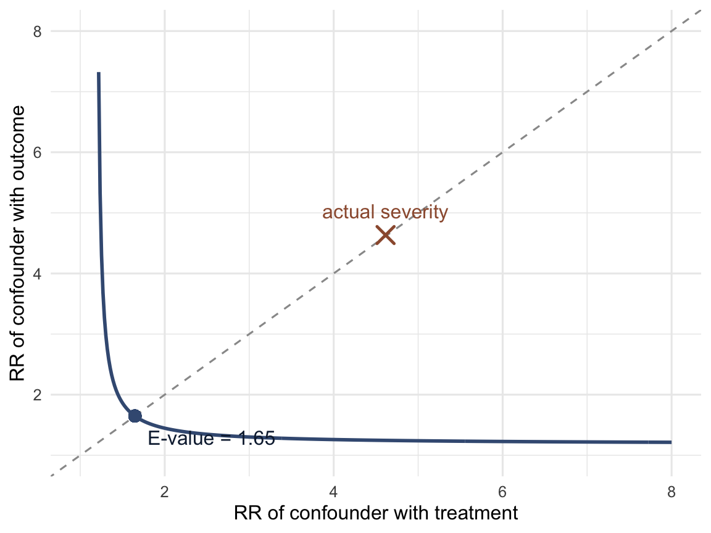
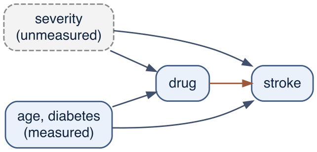
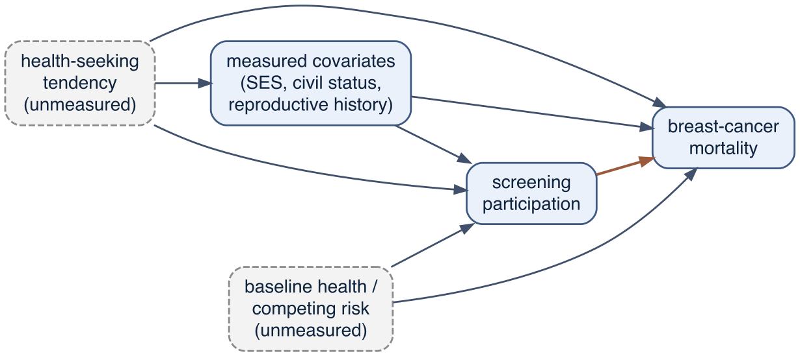

Show code
df <- simulate_cohort(n = N_COHORT, seed = 2024)
truth <- cohort_truth(df) # the oracle answer key
truth_RR <- truth$ATE_RREvery method in Part III and Part IV recovers a causal effect by measuring the right variables and adjusting for them (Chapter 13 to Chapter 15), or by exploiting a structure — an instrument, a mediator, a threshold — that stands in for randomisation (Chapter 18, Chapter 19). Each rests on an assumption the data cannot confirm: that the adjustment set blocks every back-door path, that the instrument affects the outcome only through treatment, that nothing else changes at the cutoff. This chapter takes the assumption most analyses depend on — no unmeasured confounding — and asks a quantitative question about the case in which it fails: how strong would an unmeasured confounder have to be to overturn the conclusion?
The question matters because the assumption is almost never exactly true. In the master cohort the confounder that drives the whole problem, disease severity, is partly unmeasured by design (Chapter 13): a physician treats on a clinical impression that no recorded variable fully captures. An analyst who cannot measure it is left with an estimate that is confounded to an unknown degree. Sensitivity analysis does not remove that confounding — nothing computed from the observed data can — but it converts the vague worry “there might be unmeasured confounding” into a number: the strength an unmeasured confounder would need, which the analyst can then judge against subject-matter knowledge.
We use the master cohort throughout, because it has a feature real data never offers: we know the truth, and we know exactly how strong the hidden confounder is, so we can check whether the sensitivity analysis points in the right direction.
We load the cohort and record the true causal risk ratio from the oracle, then take the position of an analyst who has age and diabetes but not severity.
df <- simulate_cohort(n = N_COHORT, seed = 2024)
truth <- cohort_truth(df) # the oracle answer key
truth_RR <- truth$ATE_RRThe risk ratio is estimated the way the rest of the book estimates effects: a Poisson working model with a log link (the callout of Chapter 13; Chapter 25), fitted with brms, the drug’s effect read as a marginal risk ratio by standardisation (avg_comparisons() with comparison = "ratioavg") and reported with a 95% credible interval. Beside it, for comparison, is the frequentist fit the sensitivity-analysis literature usually starts from: the same Poisson model by maximum likelihood with a robust (sandwich) standard error, which corrects the Poisson variance for a 0/1 outcome.
pri_rr <- c(prior(normal(-3, 1), class = "Intercept"), # log baseline risk
prior(normal(0, 0.5), class = "b")) # log risk ratios
fit_rr <- function(formula, file)
brm(formula, family = poisson(), data = df, prior = pri_rr,
chains = 4, iter = 800, warmup = 400, seed = 1,
file = file, file_refit = "on_change")
rr_bayes <- function(m) { # marginal risk ratio, the book's convention
a <- avg_comparisons(m, variables = "drug", comparison = "ratioavg")
c(RR = a$estimate, lo = a$conf.low, hi = a$conf.high)
}
m_crude <- fit_rr(stroke ~ drug, "models/ch19_crude")
m_meas <- fit_rr(stroke ~ drug + age + diabetes, "models/ch19_meas")
m_full <- fit_rr(stroke ~ drug + age + diabetes + severity, "models/ch19_full")
crude <- rr_bayes(m_crude) # no adjustment
adj_meas <- rr_bayes(m_meas) # measured confounders only
adj_full <- rr_bayes(m_full) # if severity were knownlibrary(sandwich); library(lmtest)
rr_poisson <- function(formula, data) {
m <- glm(formula, family = poisson(), data = data)
co <- coeftest(m, vcov = sandwich)
b <- co["drug", "Estimate"]; se <- co["drug", "Std. Error"]
c(RR = exp(b), lo = exp(b - 1.96 * se), hi = exp(b + 1.96 * se))
}
crude_f <- rr_poisson(stroke ~ drug, df)
adj_meas_f <- rr_poisson(stroke ~ drug + age + diabetes, df)
adj_full_f <- rr_poisson(stroke ~ drug + age + diabetes + severity, df)| Analysis | RR (posterior) | 95% CrI | RR (glm) | 95% CI (robust) |
|---|---|---|---|---|
| Crude (no adjustment) | 1.66 | (1.52, 1.81) | 1.67 | (1.54, 1.82) |
| Adjusted for age + diabetes | 1.18 | (1.08, 1.29) | 1.18 | (1.08, 1.29) |
| Adjusted for age + diabetes + severity | 0.62 | (0.56, 0.68) | 0.61 | (0.56, 0.67) |
In Table 20.1 the crude risk ratio is 1.66: the drug appears to raise stroke risk, the sign-reversed answer of Chapter 13. Adjusting for the measured confounders pulls it down to 1.18, but it still points the wrong way — age and diabetes do not capture the confounding by indication that runs through severity. Only the third row, which adjusts for severity, recovers the true protective effect of about 0.6. The realistic analyst, who cannot measure severity, is stuck at 1.18 and knows only that some unmeasured confounding remains. The question is how much.
VanderWeele and Ding proposed a single summary for this situation.1 The E-value is the minimum strength of association, on the risk-ratio scale, that an unmeasured confounder would need to have with both the treatment and the outcome — over and above the measured covariates — to fully explain away an observed treatment-outcome association. It is computed from the point estimate alone. For an observed risk ratio \(\mathrm{RR}\) (taking the reciprocal first if it is protective, so the working value is \(\ge 1\)):
\[ \text{E-value} = \mathrm{RR} + \sqrt{\mathrm{RR}\,(\mathrm{RR} - 1)}. \]
evalue_rr <- function(rr) {
rr <- ifelse(rr < 1, 1 / rr, rr) # protective effects: work on the >1 scale
rr + sqrt(rr * (rr - 1))
}
ev_point <- evalue_rr(adj_meas["RR"]) # for the point estimate
ev_ci <- evalue_rr(adj_meas["lo"]) # interval limit closest to the null (lower, since RR > 1)For the age-and-diabetes-adjusted estimate of 1.18, the E-value is 1.65. The interpretation is precise: an unmeasured confounder could account for the apparent harm only if it were associated with both drug receipt and stroke by a risk ratio of at least 1.65 each, beyond age and diabetes. A weaker confounder — one below that threshold on either arm — could not move the estimate all the way to the null. VanderWeele and Ding recommend reporting the E-value for the interval limit nearest the null as well — their confidence limit, here the credible limit; that limit is 1.08, with an E-value of 1.39.
The formula assumes nothing about the confounder beyond its two risk ratios: it need not be binary, and there may be several confounders acting jointly, in which case the E-value refers to their combined effect. The relationship is derived from a bounding argument (the next section) rather than from a specific model, which is what makes a single number defensible.
The E-value describes the strength needed to move the estimate to the null. It does not say such a confounder exists. Read on its own, a large E-value is reassuring only to the extent that a confounder that strong is implausible in the setting at hand — which is a judgement about the subject matter, not a property of the data.
The E-value’s reassurance rests on the confounder being implausibly strong. The master cohort shows why that reading can fail: here the unmeasured confounder is not hypothetical, and we can measure how strong it actually is. We contrast the top and bottom quartiles of severity and estimate its association with the outcome and with treatment, on the same risk-ratio scale and adjusting for the same measured covariates.
qs <- quantile(df$severity, c(0.25, 0.75))
df2 <- df |>
mutate(sev_hi = case_when(severity >= qs[2] ~ 1L,
severity <= qs[1] ~ 0L,
TRUE ~ NA_integer_)) |>
filter(!is.na(sev_hi))
RR_UY <- exp(coef(glm(stroke ~ sev_hi + age + diabetes, poisson(), df2))["sev_hi"])
RR_UA <- exp(coef(glm(drug ~ sev_hi + age + diabetes, poisson(), df2))["sev_hi"])
c(severity_outcome_RR = RR_UY, severity_treatment_RR = RR_UA) severity_outcome_RR.sev_hi severity_treatment_RR.sev_hi
4.633787 4.614220 High-severity patients have about 4.6 times the stroke risk of low-severity patients and are about 4.6 times as likely to be treated (the coefficients are read directly here because, in a log-linear model with no interactions, the exponentiated coefficient is the conditional risk ratio the bound asks for). Both associations are far above the E-value threshold of 1.65. That is the point of the example: a confounder strong enough to explain away the apparent harm is not implausible here — it is the actual data-generating mechanism. In a confounding-by-indication setting, where the same clinical severity that prompts treatment also drives the outcome, associations of this magnitude are the rule, not the exception, and an E-value of 1.65 offers little protection. This is why adjusting for severity does not merely pull the estimate to the null but carries it past, to the truly protective 0.62.
The direction of the moral is the reverse of the usual one. Sensitivity analysis is most often used to defend a finding — to argue that no plausible confounder could overturn it. The same arithmetic, applied to a confounded estimate, warns that a plausible confounder could overturn it, and here does.
The E-value is a special case of a more general bound.2 An unmeasured confounder U with risk ratio \(\mathrm{RR}_{UA}\) on treatment and \(\mathrm{RR}_{UY}\) on the outcome can bias an observed risk ratio by at most the bounding factor
\[ \mathrm{BF} = \frac{\mathrm{RR}_{UA}\,\mathrm{RR}_{UY}}{\mathrm{RR}_{UA} + \mathrm{RR}_{UY} - 1}. \]
The true risk ratio lies no closer to the null than \(\mathrm{RR}_{\text{obs}}/\mathrm{BF}\) (for an estimate above 1) — a worst case that holds whatever the confounder’s distribution. The E-value is the value at which, setting \(\mathrm{RR}_{UA} = \mathrm{RR}_{UY}\), the bounding factor equals the observed risk ratio, so the bound just reaches the null. Any pair \((\mathrm{RR}_{UA}, \mathrm{RR}_{UY})\) whose bounding factor reaches \(\mathrm{RR}_{\text{obs}}\) would suffice; the E-value picks the single point on that curve where the two arms are equal.
bias_factor <- function(rr_ua, rr_uy) (rr_ua * rr_uy) / (rr_ua + rr_uy - 1)
BF_severity <- bias_factor(RR_UA, RR_UY)
c(bias_factor_of_severity = BF_severity, observed_RR = adj_meas["RR"])bias_factor_of_severity.sev_hi observed_RR.RR
2.592300 1.182607 The bounding factor that severity can actually produce is 2.59, larger than the observed 1.18 — so severity alone is capable of explaining away the apparent harm and then some, consistent with the sign reversal we know is real. The curve below shows every confounder strength that would just explain away the estimate; the E-value is where it crosses the diagonal, and the actual severity point lies well beyond it.

The E-value asks about a confounder occupying a specific position: a common cause of treatment and outcome, left out of the adjustment set. In the master cohort that node is severity.

The two arrows out of severity are the two risk ratios in the bounding factor. Bounding methods of this kind extend to more elaborate positions — a confounder that is also affected by treatment, or one that acts through selection rather than confounding — with correspondingly more elaborate bias formulas.3 But the logic is the same: name the unobserved associations, and compute the largest bias they could produce.
The E-value asks a hypothetical: how strong would a confounder have to be? A second family of sensitivity analysis asks an empirical question instead — does the data itself show a signature of bias? — by using variables whose true causal relationship to treatment or outcome is known in advance. The known answer becomes a yardstick: an estimate that departs from it is measuring bias.
The negative control — a variable whose true effect is known to be zero and which shares the confounding of the analysis of interest — was introduced and demonstrated in both its forms, the negative-control outcome and the negative-control exposure, in Chapter 19, on the master cohort’s own collider.4 Here it serves as a sensitivity analysis for the specific assumption this chapter is about: if a control shows a non-zero association where the truth is zero, the no-unmeasured-confounding assumption is not holding, and the size of the spurious association gauges how much bias remains. In pharmacoepidemiology such controls are also called falsification endpoints: outcomes prespecified as implausible consequences of the treatment, checked precisely because a positive result there falsifies the assumption that the design has removed confounding.5 A worked epidemiological use is the assessment of mammographic-screening studies, where associations between screening participation and outcomes screening cannot plausibly affect reveal the healthy-screenee selection that contaminates the real estimate.6
A positive control runs the logic in the other direction. It is a treatment-outcome relationship whose effect is known to be non-zero and of roughly established size — often a different exposure applied to the same design, or the same exposure against an outcome it is known to affect. If the analysis fails to recover the known effect — returns a null, or an attenuated estimate — the procedure is missing signal it should detect, which points to attenuation from measurement error, over-adjustment, or residual confounding acting toward the null. Positive controls are harder to use than negative ones, because they require agreement on the true effect size, not merely on a null; they are therefore used mainly to check that a method can detect an effect of the expected magnitude, rather than to correct an estimate to a precise value.
Assembling many controls turns detection into calibration. Empirical calibration fits the estimator to a large set of negative controls to trace out its actual null distribution — the spread of estimates the procedure returns when the truth is zero — which is generally not centred at the null and not as narrow as the reported standard errors imply. That empirical null is then used to recalibrate the p value and confidence interval of the real analysis so they have their nominal meaning; adding positive controls at known effect sizes extends the calibration across the range of real effects.7 The correction is only as good as the controls: it removes the systematic error that the controls share with the analysis, and is silent on any bias they do not. Under stronger, explicitly stated assumptions, a matched pair of negative controls (one exposure, one outcome) can go beyond detection and identify the confounding, allowing it to be removed rather than merely flagged — the basis of proximal causal inference.8 The assumptions there are demanding and the methods recent; a current review sets out where they apply.9
The common thread with the rest of the chapter is the trade of one unverifiable assumption for another. A control is informative only if it genuinely shares the analysis’s confounding and genuinely has the known (null or non-null) effect assumed of it — and neither can be checked in the data, only argued from subject-matter knowledge. A negative control that fails to share the confounding will wrongly reassure; one with a small real effect will wrongly alarm. Like the E-value, controls convert a vague worry into a specific, checkable claim, but the claim rests on a judgement about the world, not on the data alone.
The mammographic-screening study cited above for careful use of negative controls is worth revisiting. Lousdal et al. compared breast-cancer mortality between women who participated in screening and women who were invited but did not, adjusting for civil status, education, income, reproductive history and hormone use, and estimating a hazard ratio by Cox regression with age as the time scale. They added two negative-control outcomes (death from other causes, death from external causes) and a negative-control exposure (dental-care attendance). No DAG was drawn. Not drawing a DAG and using a Cox model are both consequential choices.
The graph the study needs. The exposure is participation, which the woman chooses. The disposition that leads her to attend — call it a health-seeking tendency — also lowers her breast-cancer mortality through routes that have nothing to do with screening: earlier symptomatic presentation, treatment adherence, healthier behaviour. It is a common cause of participation and outcome, and it is essentially unmeasured. A second unmeasured common cause, baseline health and competing-risk frailty, points the other way: frailer women both attend less and die more. The measured covariates are proxies standing alongside or downstream of the health-seeking tendency, not the tendency itself.

The effect is not identified by the chosen covariates. With the two dispositions unmeasured, we can ask the graph directly whether any set of the measured variables suffices to identify the participation effect.
library(dagitty)
g <- dagitty('dag {
A [exposure]
Y [outcome]
HS [latent]
HEALTH [latent]
C
HS -> C; HS -> A; HS -> Y
HEALTH -> A; HEALTH -> Y
C -> A; C -> Y
A -> Y
}')
adjustmentSets(g, exposure = "A", outcome = "Y") # empty output = no sufficient set existsThe function returns nothing: there is no adjustment set. An empty result here does not mean “adjust for nothing” — that would print an empty set, {} — it means no set of the measured variables closes every back-door path, so the effect is not identifiable from these data. Conditioning on exactly the covariates the study uses leaves back-door paths open through the unmeasured health-seeking tendency (A <- HS -> Y) and through frailty (A <- HEALTH -> Y). The adjustment removes the fraction of confounding that runs through measured proxies and leaves the direct self-selection paths untouched.
That is precisely why the study needs its negative controls: the authors know the covariates cannot capture self-selection, so they use negative-control outcomes to detect the residual HS -> Y and HEALTH -> Y bias that adjustment cannot reach. The design tacitly concedes the identification gap the graph makes explicit. The negative controls are being used correctly and informatively — as a diagnosis of the confounding, not a cure for it.
A timing problem the graph also surfaces. Hormone use is defined as at least two prescriptions “from 1995 onwards”, a window that extends past the second invitation that defines time zero. A variable measured after the exposure that is also affected by it is a mediator or a collider, not a baseline confounder; conditioning on it can open a path rather than close one (Chapter 16, Chapter 12). Without the prescription dates relative to time zero one cannot say how much use is post-exposure, but the definition as written straddles the exposure, and adjusting a post-exposure variable is a design error independent of the self-selection problem.
The estimator is the wrong one, on two counts with one root. A hazard is a rate among those still at risk, and who remains at risk depends on time and on what the model conditions on. First, the hazard ratio, like the odds ratio (Chapter 25), is non-collapsible: even with no confounding, adding a risk factor to the model changes it, because the conditional and the marginal hazard ratio are different quantities rather than one quantity estimated with and without adjustment. The “general” and “breast-cancer-specific” models are therefore not on a common scale, and the change between them conflates a change in confounding with a change of estimand. Second, a hazard ratio conditions on survival to each time point, so once frailty affects mortality the later risk sets are differentially depleted of high-risk women, and the instantaneous hazard ratio drifts even under randomisation — the built-in selection that Chapter 26 showed in a drifting rate ratio.10 With age as the time scale and a strong competing-risk arrow, the later-age contrasts compare survivor populations already sorted by unmeasured frailty. This selection is itself a graphical object — conditioning on survival is conditioning on a collider on the frailty-to-outcome path (Chapter 12).11 A collapsible marginal estimand — a risk difference or risk ratio at a fixed horizon, recovered by standardisation or g-computation (Chapter 13, Chapter 29) — would have avoided both problems.
Why the study fails. The exposure is self-selected on a disposition that is both unmeasured and a direct cause of the outcome, so the effect is not identified by any available covariate set; the covariates are weak proxies (and one is mis-timed); and the Cox hazard ratio would not be a clean causal contrast even if the confounding were solved. What the data support is not an adjusted hazard ratio but a bound — a negative-control or E-value statement of how large the participant survival advantage would have to be before it is entirely self-selection. A recent analysis of the German mammography screening programme makes the same case: the survival advantage of participants is largely confounding, to be isolated rather than reported as an effect.12
The lesson generalises beyond screening. Negative controls are a genuine advance, but they detect bias; they do not license an adjusted point estimate when the graph shows the effect is unidentified. A DAG drawn before the analysis would have shown that the participation contrast was not identifiable from the measured data, and redirected the study toward the invitation contrast (randomised in many programmes, hence an instrument — Chapter 18) or toward an explicit bound. The tools of this chapter are for the case where identification has already been argued and one asks how fragile it is — not a substitute for asking whether it holds.
The reanalysis that this redirection implies, an emulated trial of the invitation rather than of participation, is set out as a worked protocol in Chapter 14.
The E-value is a screening device, not a full sensitivity analysis. It reports the strength at the boundary and says nothing about strengths short of it, and it deliberately uses no information about the confounder’s prevalence or its correlation with the measured covariates. Where such information is available, a fuller analysis substitutes it directly. The oldest form is external adjustment: take the confounder’s associations from another data source, and compute what the estimate would become under a range of assumed strengths and prevalences.13 14 The array-based version tabulates the corrected estimate over a grid of assumed confounder-treatment and confounder-outcome associations, so a reader can see at once which combinations would overturn the finding.
The idea is older than its formalisation. Cornfield and colleagues, defending the association between smoking and lung cancer,15 argued that any factor entirely responsible for a ninefold mortality ratio would itself have to be at least nine times as common among smokers — a threshold so extreme that no candidate confounder met it. That is the E-value argument in words: the observed association sets a floor on how strong a confounder must be, and the defence is that no plausible factor reaches the floor. The E-value gives the floor a formula.
Two cautions apply throughout. First, a sensitivity analysis addresses only the bias it is built for — unmeasured confounding here — and is silent on measurement error, selection, and model misspecification. Second, no sensitivity analysis can rescue a study from confounding; it can only state the terms on which the conclusion survives, and leave the reader to judge whether an unmeasured confounder on those terms is credible. In the master cohort we know the answer: a confounder that strong is present, and the apparent harm is an artefact of it.
Part III built the case that an observational comparison is an attempt to emulate a target trial (Chapter 14), and that chapter closed on the questions the framing cannot reach: exposures such as obesity, socioeconomic position or a lifetime diet that name no assignable intervention, for which there is no trial to emulate even in principle. One response is to reformulate the question until an intervention appears. The other holds that the potential-outcomes approach is one tool among several rather than the definition of causal inference, and that discovery, mechanism, dose-response, coherence across study designs and inference to the best explanation, the descendant of the abduction described in Chapter 4, are legitimate routes to causal knowledge for questions no trial can address.16 This closing section of Part IV asks what, on that second view, corroborates a causal claim when no trial can check it, how far the answer reaches, and where it stops. It draws on the instruments the part has introduced: instruments and Mendelian randomisation (Chapter 18), natural experiments (Chapter 19), and the negative controls and bounding arguments of this chapter.
The question bears on the standing of the randomised trial as the thing an observational study is verified against. For the interventional questions target trial emulation was built for, the benchmarking evidence of Chapter 14 supports that standing. However, this does not generalise into a criterion for causal knowledge. It is also easy to overstate what the observational alternatives offer. The instrumental-variable and quasi-experimental designs of Chapter 18 and Chapter 19 — including Mendelian randomisation, named for the randomisation it imitates — are not alternatives to the experimental ideal but its observational extensions: each works by finding a source of as-if-random variation in the exposure, and so inherits rather than relaxes the requirement of a well-defined, manipulable intervention. An instrument for body weight estimates the effect of the weight the instrument shifts, one more well-defined-intervention reformulation rather than an escape from it.17 Negative controls are, in the same way, a device for detecting confounding within an exposure-outcome study, as this chapter has shown; they presuppose the very effect whose existence is in question. None of these reaches the questions that lie outside the interventionist programme.
The best solution we have here is old-fashioned triangulation: the convergence of several approaches whose sources of bias are different and unrelated, so that agreement between them is hard to explain by bias alone.18 The experimentalist designs above are among the inputs to triangulation, not a replacement for it; they sit alongside non-experimental evidence — mechanism, dose-response, replication across populations, and coherence with what else is known — weighed together as an inference to the best explanation. The branches of epidemiology that cannot be cast as a target trial work under this broader standard, in which no single design is the sole arbiter.
Two senses of “no trial”. In the first, a trial is well defined but cannot be run, for ethical or practical reasons (one cannot randomise people to drink at a fixed level for forty years); the exposure is concrete and manipulable, the trial is conceivable, and consistency (Chapter 11) holds. In the second, the exposure is not manipulable even in principle — socioeconomic position, or race as a state of a person rather than an intervention on it — so there is no well-defined trial to imagine and consistency fails. The prospects for corroboration differ sharply between them, and almost all the convincing cases belong to the first.
The strongest corroboration is usually a randomisation found rather than abandoned. The most productive tool of the past two decades for these questions has been Mendelian randomisation, which uses the random assortment of alleles at conception as an instrument for a modifiable exposure.19 As noted above, this is a natural experiment, and it does not escape the interventionist programme. It locates an as-if randomisation inside observational data and earns its credibility in the same way the emulation does — by anticipating trial results where an RCT could later be run. Plasma HDL cholesterol is the cleanest case. Observational cohorts had found high HDL strongly associated with lower risk of myocardial infarction; a Mendelian randomisation analysis found that a genetic variant raising HDL did not lower infarction risk at all, while a genetic score for LDL — included as a positive control — predicted risk in the same direction the observational data did.20 The prediction was that raising HDL would not help, and subsequent trials of HDL-raising therapies indeed found no reduction in vascular events.21 The non-experimental method had predicted the trial result before the trial was run. That calibration is what licenses its use where no trial will follow: when Mendelian randomisation, with the ADH1B alcohol-metabolism variant as instrument, indicated that a genetic tendency to drink less was associated with a better cardiovascular profile and lower coronary risk even among light and moderate drinkers, it undercut the long-standing observational claim that moderate drinking protects the heart — a claim no feasible trial of lifelong drinking could settle.22
Where no genetic instrument exists, a policy or exposure shock can serve the same role. Quasi-experimental designs (Chapter 19) exploit an abrupt, externally imposed change in exposure that is plausibly unrelated to the outcome’s other determinants. The effect of particulate air pollution on mortality cannot be put to a trial that assigns people to dirty air, but when Dublin banned the sale of coal in 1990, black-smoke concentrations fell by about 70%, and an interrupted time-series analysis — adjusting for weather, respiratory epidemics, and death rates in the rest of Ireland — found respiratory deaths down about 15% and cardiovascular deaths about 10% in the years after the ban.23 No single such study is decisive, and the confidence in air pollution as a cause of death rests on a combination: consistent associations across many cohorts, a dose-response relationship, a toxicological mechanism, and natural experiments of this kind. Even here the claim of “no trial” is not absolute — cluster-randomised trials of cleaner cookstoves test household air pollution, and short-term controlled human exposures test physiological intermediates; what cannot be trialled is long-term ambient exposure against hard endpoints.
A few questions have reached near-certainty from observation and mechanism alone. Smoking and lung cancer is the standard case. There has never been a randomised trial, nor a genetic instrument of the modern kind, yet the causal conclusion is as secure as almost any in medicine. The confidence comes from the size of the association, its consistency across populations and study designs, the dose-response gradient, the correct temporal order, known carcinogenic mechanisms, and a formal argument that an unmeasured confounder would have to be implausibly strongly associated with both smoking and cancer to account for an effect of that magnitude.24 The effect of asbestos on mesothelioma is a similar case, with the added force of near-specificity: the cancer is rare without the exposure. These cases work because the effects are large and specific. The argument does not transfer to the small risk ratios that occupy most of observational epidemiology.
What a corroboration looks like. The common structure is triangulation: the convergence of approaches whose sources of bias are different and, where possible, point in opposite directions, so that agreement cannot be explained by a bias they share.25 A persuasive package typically combines several of the following, chosen so their weaknesses do not overlap:
The corroboration is the failure of these strands to disagree when no shared bias was available to make them agree. Trust then has two layers: an internal one, the triangulation within the question, and an external one, the record of the strongest strand — Mendelian randomisation above all — reproducing trial results in the cases where a trial could be run. The relationship is the one Chapter 14 drew for emulation: as target trial emulation is to its benchmarking programmes, Mendelian randomisation is to the lipid trials. Each method is calibrated against real trials where both are possible, then extended to where only the method can go.
For the second sense of “no trial” — exposures that are not well-defined interventions — this route largely fails. The as-if-randomisation strands that are most informative elsewhere themselves require a manipulable exposure: a genetic instrument estimates the effect of the specific thing the variant shifts, and a policy shock estimates the effect of the specific change it imposed, so each, applied to “socioeconomic position” or “race”, silently substitutes a narrower, well-defined quantity for the original. What remains is robust association and partial mechanistic understanding, which is the appropriate ceiling for such questions rather than a deficiency to be corrected. The position is the one Part III and this part have held throughout: for a well-defined intervention, an actual or natural experiment is the standard, and triangulation around it can reach trial-grade confidence; for an exposure that is not an intervention at all, there is no experiment to approximate, and the confidence available is more limited — strong enough to act on, often, but not the same thing as a trial.
Part IV ends here, and with it the book’s account of identification. Parts III and IV asked what makes a comparison causal: a graph that names the adjustment set, a design that stands in for randomisation when the graph cannot be closed, and, in this chapter, a statement of how wrong the unverifiable assumption would have to be before the conclusion turned over. Part V asks how the pieces the graph calls for are estimated. Its chapters, from Chapter 21 onwards, build the Bayesian regression model as the “model in the middle” of the standardisation that Chapter 13 did with cell means: a fitted model supplies the conditional risks, the g-formula averages them, and the posterior carries uncertainty through to the causal contrast. The questions of this chapter return there in two places. The capstone, Chapter 29, ends with what g-computation does not fix and points back here; and the missing-data chapter, Chapter 30, runs a sensitivity analysis of its own kind, over the values that were never recorded.
severity has associations of about 4.6 on each arm, far above the E-value of 1.65, which is why adjusting for it reverses the sign.E-value by hand. A study reports an adjusted risk ratio of 2.0. Compute its E-value. Now suppose a critic proposes a confounder associated with treatment by a risk ratio of 1.5 and with the outcome by 3.0. Using the bounding factor \(\mathrm{RR}_{UA}\mathrm{RR}_{UY}/(\mathrm{RR}_{UA}+\mathrm{RR}_{UY}-1)\), does this confounder suffice to explain away the effect? Reconcile your answer with the E-value.
The confidence limit. Refit the age-and-diabetes-adjusted model and compute the E-value for the point estimate and for the confidence limit closest to the null. Why is the second always smaller, and which should a cautious reader weigh more heavily?
Change the strength of the hidden confounder. In R/simulate_cohort.R the parameter g_sev sets how strongly severity drives stroke and d_sev how strongly it drives treatment. Halve g_sev, re-simulate, and recompute (a) the age-and-diabetes-adjusted risk ratio and its E-value and (b) the actual severity-outcome and severity-treatment risk ratios. Does the actual confounding still clear the E-value bar? Does the sign still reverse?
A confounder that does not suffice. Find, by trial, a value of g_sev for which the adjusted estimate no longer reverses sign (stays above 1 but the truth is protective). Compute the E-value and the actual bounding factor. Interpret the case in which the actual confounding is real but too weak to reverse the naive conclusion.
Conceptual. A published observational study reports a protective risk ratio of 0.70 with an E-value of 1.9, and the authors argue no confounder is plausibly that strong. What would you need to know about the exposure and the outcome to agree or disagree? Contrast a setting where 1.9 is genuinely reassuring with one (like confounding by indication) where it is not.
Corroboration without a trial. The HDL example shows a non-experimental method (Mendelian randomisation) predicting a trial result before the trial was run, which is what licensed trusting it where no trial followed (alcohol). Pick a current causal claim that no trial can settle and sketch a triangulation package for it: name three strands whose sources of bias are unrelated, state for each the direction in which its bias would push the estimate if it were wrong, and explain why their agreement would be hard to attribute to bias. Which single strand, if any, carries an as-if randomisation, and has the method behind it been calibrated against trials elsewhere?
VanderWeele TJ, Ding P, “Sensitivity Analysis in Observational Research: Introducing the E-Value,” Ann Intern Med 2017;167:268-274 (DOI).↩︎
Ding P, VanderWeele TJ, “Sensitivity Analysis Without Assumptions,” Epidemiology 2016;27:368-377 (DOI).↩︎
VanderWeele TJ, Arah OA, “Bias formulas for sensitivity analysis of unmeasured confounding for general outcomes, treatments, and confounders,” Epidemiology 2011;22:42-52 (DOI).↩︎
Lipsitch M, Tchetgen Tchetgen E, Cohen T, “Negative controls: a tool for detecting confounding and bias in observational studies,” Epidemiology 2010;21:383-388 (DOI).↩︎
Prasad V, Jena AB, “Prespecified falsification end points: can they validate true observational associations?,” JAMA 2013;309:241-242 (DOI).↩︎
Lousdal ML, Lash TL, Flanders WD, Brookhart MA, Kristiansen IS, Kalager M, Støvring H, “Negative controls to detect uncontrolled confounding in observational studies of mammographic screening comparing participants and non-participants,” Int J Epidemiol 2020;49:1032-1042 (DOI).↩︎
Schuemie MJ, Ryan PB, DuMouchel W, Suchard MA, Madigan D, “Interpreting observational studies: why empirical calibration is needed to correct p-values,” Stat Med 2014;33:209-218 (DOI); Schuemie MJ, Hripcsak G, Ryan PB, Madigan D, Suchard MA, “Empirical confidence interval calibration for population-level effect estimation studies in observational healthcare data,” Proc Natl Acad Sci U S A 2018;115:2571-2577 (DOI).↩︎
Miao W, Geng Z, Tchetgen Tchetgen EJ, “Identifying causal effects with proxy variables of an unmeasured confounder,” Biometrika 2018;105:987-993 (DOI).↩︎
Shi X, Miao W, Tchetgen Tchetgen EJ, “A selective review of negative control methods in epidemiology,” Curr Epidemiol Rep 2020;7:190-202 (DOI).↩︎
Hernán MA, “The hazards of hazard ratios,” Epidemiology 2010;21:13-15 (DOI).↩︎
Hernán MA, Hernández-Díaz S, Robins JM, “A structural approach to selection bias,” Epidemiology 2004;15:615-625 (DOI).↩︎
Buschmann L, Wellmann I, Bonberg N, Wellmann J, Hense HW, Karch A, “Isolating the effect of confounding from the observed survival benefit of screening participants - a methodological approach illustrated by data from the German mammography screening programme,” BMC Med 2024;22:43 (DOI).↩︎
Lin DY, Psaty BM, Kronmal RA, “Assessing the sensitivity of regression results to unmeasured confounders in observational studies,” Biometrics 1998;54:948-963 (DOI).↩︎
Schneeweiss S, “Sensitivity analysis and external adjustment for unmeasured confounders in epidemiologic database studies of therapeutics,” Pharmacoepidemiol Drug Saf 2006;15:291-303 (DOI).↩︎
Cornfield J, Haenszel W, Hammond EC, Lilienfeld AM, Shimkin MB, Wynder EL, “Smoking and lung cancer: recent evidence and a discussion of some questions,” J Natl Cancer Inst 1959;22:173-203 (DOI).↩︎
Vandenbroucke JP, Broadbent A, Pearce N, “Causality and causal inference in epidemiology: the need for a pluralistic approach,” Int J Epidemiol 2016;45:1776-1786 (DOI); Krieger N, Davey Smith G, “The tale wagged by the DAG: broadening the scope of causal inference and explanation for epidemiology,” Int J Epidemiol 2016;45:1787-1808 (DOI).↩︎
Davey Smith G, Ebrahim S, “‘Mendelian randomization’: can genetic epidemiology contribute to understanding environmental determinants of disease?,” Int J Epidemiol 2003;32:1-22 (DOI).↩︎
Lawlor DA, Tilling K, Davey Smith G, “Triangulation in aetiological epidemiology,” Int J Epidemiol 2016;45:1866-1886 (DOI).↩︎
Davey Smith G, Ebrahim S, “‘Mendelian randomization’: can genetic epidemiology contribute to understanding environmental determinants of disease?,” Int J Epidemiol 2003;32:1-22 (DOI).↩︎
Voight BF, Peloso GM, Orho-Melander M, et al., “Plasma HDL cholesterol and risk of myocardial infarction: a mendelian randomisation study,” Lancet 2012;380:572-580 (DOI).↩︎
HPS2-THRIVE Collaborative Group, “Effects of extended-release niacin with laropiprant in high-risk patients,” N Engl J Med 2014;371:203-212 (DOI).↩︎
Holmes MV, Dale CE, Zuccolo L, et al., “Association between alcohol and cardiovascular disease: Mendelian randomisation analysis based on individual participant data,” BMJ 2014;349:g4164 (DOI).↩︎
Clancy L, Goodman P, Sinclair H, Dockery DW, “Effect of air-pollution control on death rates in Dublin, Ireland: an intervention study,” Lancet 2002;360:1210-1214 (DOI).↩︎
Cornfield J, Haenszel W, Hammond EC, Lilienfeld AM, Shimkin MB, Wynder EL, “Smoking and lung cancer: recent evidence and a discussion of some questions,” J Natl Cancer Inst 1959;22:173-203 (DOI).↩︎
Lawlor DA, Tilling K, Davey Smith G, “Triangulation in aetiological epidemiology,” Int J Epidemiol 2016;45:1866-1886 (DOI).↩︎